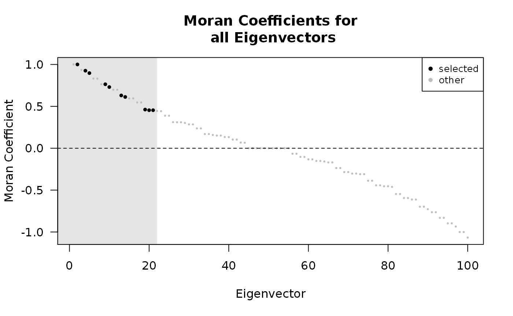

vignettes/spfilteR_vignette.Rmd
spfilteR_vignette.RmdThe spfilteR package provides tools to implement the eigenvector-based spatial filtering (ESF) approach put forth by Griffith (2003) in linear and generalized linear regression models. It allows users to obtain eigenvectors from a transformed connectivity matrix and supports the supervised and unsupervised creation of a synthetic spatial filter. For the unsupervised approach, eigenvectors can be selected based on either i) the maximization of model fit, ii) the minimization of residual autocorrelation, iii) the statistical significance of residual autocorrelation, or iv) the significance level of candidate eigenvectors. Alternatively, all eigenvectors in the search set may be included so that no selection takes place. While the functions provide a high flexibility, only a minimum of code is required to implement the unsupervised ESF approach.
This vignette solely focuses on the workflow to illustrate the functionality of the spfilteR package. For a discussion on the ESF methodology, interested readers may be referred to other sources, e.g., Griffith, Chun, and Li (2019) or Tiefelsdorf and Griffith (2007).
A stable release version of the spfilteR package is available on CRAN and the latest development version can be downloaded from GitHub.
# CRAN release
install.packages("spfilteR")
# GitHub
library(devtools)
devtools::install_github("sjuhl/spfilteR")Together with the main functions, the package contains an artificial dataset (fakedataset) and a connectivity matrix (W) connecting the 100 cross-sections on a regular grid by using the rook criterion of adjacency. For illustrative purposes, the following examples utilize the fake dataset.
# load the package
library(spfilteR)
# load the dataset
data("fakedata")
# take a look at the connectivity matrix and the variables
dim(W)
#> [1] 100 100
head(fakedataset)
#> ID indicator count x1 x2 x3 negative negcount
#> 1 1 0 0 11.29514 5.527426 6.6406409 -2.338103 9
#> 2 2 0 4 13.92705 7.047870 4.0049350 -2.048737 3
#> 3 3 1 1 17.31431 10.525834 -0.7022595 -1.868379 5
#> 4 4 1 4 15.21778 7.817901 1.5948141 -2.737914 2
#> 5 5 1 3 15.56298 7.903947 -1.2708973 -1.117427 2
#> 6 6 1 2 17.43941 11.254842 -1.4158475 1.577442 2Besides an ID variable, the dataset contains a binary indicator variable, two count variables, and four continuous variables.
In a first step, the function MI.vec() checks for the presence of spatial autocorrelation in the continuous variables by means of Moran’s I (see also Cliff and Ord 1981, 1972). The function further allows users to define the alternative hypothesis in order to obtain p-values.
# select continuous variables
cont <- cbind(fakedataset$x1,fakedataset$x2,fakedataset$x3,fakedataset$negative)
colnames(cont) <- c("x1","x2","x3","negative")
# Moran test of spatial autocorrelation
(I <- MI.vec(x=cont,W=W,alternative='greater'))
#> I EI VarI zI pI
#> x1 0.311178214 -0.01010101 0.005344193 4.3948248 5.543107e-06 ***
#> x2 0.168757531 -0.01010101 0.005344193 2.4466317 7.209904e-03 **
#> x3 0.009112739 -0.01010101 0.005344193 0.2628276 3.963417e-01
#> negative -0.244064424 -0.01010101 0.005344193 -3.2004192 9.993139e-01The output suggests that the variables x1 and x2 are positively autocorrelated at conventional levels of statistical significance. Moreover, the standardized value of Moran’s I (zI) indicates that the variable negative is negatively autocorrelated. We can use the function MI.vec() and specify alternative='lower' to assess the significance of the negative autocorrelation:
MI.vec(x=fakedataset$negative,W=W,alternative='lower')
#> I EI VarI zI pI
#> 1 -0.2440644 -0.01010101 0.005344193 -3.200419 0.0006861391 ***Since the Moran coefficient is a global measure of spatial autocorrelation, spatial heterogeneity constitutes a problem for this statistic. More specifically, the simultaneous presence of positive and negative spatial autocorrelation at different scales cannot be revealed by the classical Moran’s I. To circumvent this problem, the function MI.decomp() decomposes the Moran coefficient into a positively and a negatively autocorrelated part and performs a permutation procedure to assess the significance (Dray 2011):
# decompose Moran's I
(I.dec <- MI.decomp(x=cont,W=W,nsim=100))
#> I+ VarI+ pI+ I- VarI- pI-
#> x1 0.3894789 0.001853828 0.00990099 ** -0.0783007 0.001457299 1.00000000
#> x2 0.3048369 0.001726795 0.02970297 * -0.1360794 0.001724496 1.00000000
#> x3 0.2247566 0.001902172 0.25742574 -0.2156438 0.002076520 0.45544554
#> negative 0.1131614 0.001863855 1.00000000 -0.3572259 0.002082196 0.00990099
#> pItwo.sided
#> x1 0.01980198 *
#> x2 0.05940594 .
#> x3 0.51485149
#> negative ** 0.01980198 *Note that the global Moran’s I is the sum of I+ and I-:
# I = 'I+' + 'I-'
cbind(I[,"I"], I.dec[,"I+"] + I.dec[,"I-"])
#> [,1] [,2]
#> x1 0.311178214 0.311178214
#> x2 0.168757531 0.168757531
#> x3 0.009112739 0.009112739
#> negative -0.244064424 -0.244064424Assume that we wish to regress x1 on x2 and test for residual autocorrelation using the function MI.resid().
# define variables
y <- fakedataset$x1
X <- cbind(1,fakedataset$x2)
# OLS regression
ols.resid <- resid(lm(y~X))
# Moran test of residual spatial autocorrelation
MI.resid(resid=ols.resid,W=W,alternative='greater')
#> I EI VarI zI pI
#> 1 0.350568 -0.01010101 0.005344193 4.933643 4.035495e-07 ***The results show that the residuals are significantly autocorrelated which violates the assumption of uncorrelated errors. In order to resolve this problem of spatial autocorrelation in regression residuals, the function lmFilter() estimates a spatially filtered linear regression model using an unsupervised stepwise regression to identify relevant eigenvectors derived from the transformed connectivity matrix. Below, the unsupervised eigenvector search algorithm selects eigenvectors based on the reduction in residual autocorrelation. The output is a class spfilter object.
# ESF model
(lm.esf <- lmFilter(y=y,x=X,W=W,objfn='MI',positive=TRUE,ideal.setsize=TRUE,tol=.2))
#> 10 out of 22 candidate eigenvectors selected
summary(lm.esf,EV=TRUE)
#>
#> - Spatial Filtering with Eigenvectors (Linear Model) -
#>
#> Coefficients (OLS):
#> Estimate SE p-value
#> (Intercept) 9.012515 0.67239615 5.708941e-23 ***
#> beta_1 1.019861 0.08081741 1.909083e-21 ***
#>
#> Adjusted R-squared:
#> Initial Filtered
#> 0.4673945 0.7285335
#>
#> Filtered for positive spatial autocorrelation
#> 10 out of 22 candidate eigenvectors selected
#> Objective Function: "MI"
#>
#> Summary of selected eigenvectors:
#> Estimate SE p-value partialR2 VIF MI
#> ev_13 -9.617150 1.440325 2.107650e-09 0.23208263 1.005781 0.6302019 ***
#> ev_4 -3.134008 1.474705 3.637477e-02 0.02873360 1.049729 0.9257835 *
#> ev_10 -5.474270 1.446527 2.807003e-04 0.07901543 1.013360 0.7303271 ***
#> ev_2 4.852733 1.436764 1.090937e-03 0.06021907 1.001494 1.0004147 **
#> ev_9 3.359399 1.463641 2.409766e-02 0.02716640 1.035058 0.7638378 *
#> ev_5 -2.916210 1.445341 4.667283e-02 0.02055372 1.011899 0.8968632 *
#> ev_19 3.791799 1.436182 9.801926e-03 0.03671349 1.000798 0.4615722 **
#> ev_21 -3.401051 1.441597 2.052611e-02 0.02833924 1.007323 0.4539879 *
#> ev_20 2.992499 1.435777 4.003746e-02 0.02241305 1.000315 0.4539879 *
#> ev_14 -2.211311 1.454082 1.319049e-01 0.01140690 1.022793 0.6121155
#>
#> Moran's I (Residuals):
#> Observed Expected Variance z p-value
#> Initial 0.35056797 -0.01192610 0.01207299 3.2990854 0.0004850019 ***
#> Filtered -0.05727726 -0.09085063 0.05199438 0.1472369 0.4414725071While the print method shows that 8 eigenvectors were selected from the candidate set consisting of 22 eigenvectors, the summary method provides additional information. Besides the ordinary least squares (OLS) parameter estimates, the output shows that the ESF model filters for positive spatial autocorrelation using the minimization of residual autocorrelation as objective function during the eigenvector search. A comparison between the filtered and the nonspatial OLS model with respect to model fit and residual autocorrelation is also provided. Since the option EV is set to TRUE, the summary method also displays information on the selected eigenvectors. As the results show, the ESF model successfully removes the spatial pattern from model residuals.
The plot method allows for an easy visualization of the results. The graph displays the Moran coefficient associated with each of the eigenvectors. The shaded area signifies the candidate set and selected eigenvectors are illustrated by black dots.
plot(lm.esf)
Moreover, lmFilter() also allows users to select eigenvectors based on alternative selection criteria:
### Alternative selection criteria:
# maximization of model fit
lmFilter(y=y,x=X,W=W,objfn='R2',positive=TRUE,ideal.setsize=TRUE)
#> 11 out of 22 candidate eigenvectors selected
# significance of residual autocorrelation
lmFilter(y=y,x=X,W=W,objfn='pMI',sig=.1,bonferroni=FALSE
,positive=TRUE,ideal.setsize=TRUE)
#> 3 out of 22 candidate eigenvectors selected
# significance of eigenvectors
lmFilter(y=y,x=X,W=W,objfn='p',sig=.1,bonferroni=TRUE
,positive=TRUE,ideal.setsize=TRUE)
#> 3 out of 22 candidate eigenvectors selected
# all eigenvectors in the candidate set
lmFilter(y=y,x=X,W=W,objfn='all',positive=TRUE,ideal.setsize=TRUE)
#> 22 out of 22 candidate eigenvectors selectedIf users wish to select eigenvectors based on individual selection criteria, they can obtain the eigenvectors using the function getEVs() and perform a supervised selection procedure using the basic stats::lm() command.
The ESF approach outlined above easily extends to generalized linear models (GLMs) as well (see also Griffith, Chun, and Li 2019). Therefore, the spfilteR package contains the function glmFilter() which uses maximum likelihood estimation (MLE) to fit a spatially filtered GLM and performs an unsupervised eigenvector search based on alternative objective functions.
Except for minor differences, glmFilter() works similar to the lmFilter() function discussed above. The option model defines the model that needs to be estimated. Currently, unsupervised spatial filtering is possible for logit, probit, and poisson models. Moreover, the option optim.method specifies the optimization method used to maximize the log-likelihood function. Finally, resid.type allows users to define the type of residuals used to calculate Moran’s I and boot.MI is an integer specifying the number of bootstrap permutations to obtain the variance of Moran’s I.
# define outcome variables
y.bin <- fakedataset$indicator
y.count <- fakedataset$count
# ESF logit model
(logit.esf <- glmFilter(y=y.bin,x=NULL,W=W,objfn='p',model='logit',optim.method='BFGS'
,sig=.1,bonferroni=FALSE,positive=TRUE,ideal.setsize=FALSE
,alpha=.25,resid.type='deviance',boot.MI=100))
#> 7 out of 31 candidate eigenvectors selected
# ESF probit model
(probit.esf <- glmFilter(y=y.bin,x=NULL,W=W,objfn='p',model='probit',optim.method='BFGS'
,sig=.1,bonferroni=FALSE,positive=TRUE,ideal.setsize=FALSE
,alpha=.25,resid.type='deviance',boot.MI=100))
#> 7 out of 31 candidate eigenvectors selected
# ESF poisson model
(poisson.esf <- glmFilter(y=y.count,x=NULL,W=W,objfn='BIC',model='poisson',optim.method='BFGS'
,positive=TRUE,ideal.setsize=FALSE,alpha=.25,resid.type='deviance'
,boot.MI=100))
#> 11 out of 31 candidate eigenvectors selectedAgain, if users wish to define individual selection criteria or fit a GLM currently not implemented in glmFilter(), they can obtain the eigenvectors using the getEVs() command and perform supervised eigenvector selection using the standard stats::glm() function.
Cliff, Andrew D, and John K. Ord. 1972. “Testing for Spatial Autocorrelation Among Regression Residuals.” Geographical Analysis 4 (3): 267–84. https://doi.org/10.1111/j.1538-4632.1972.tb00475.x.
———. 1981. Spatial Processes: Models & Applications. Advances in Spatial Science. London: Pion.
Dray, Stéphane. 2011. “A New Perspective About Moran’s Coefficient: Spatial Autocorrelation as a Linear Regression Problem.” Geographical Analysis 43 (2): 127–41. https://doi.org/10.1111/j.1538-4632.2011.00811.x.
Griffith, Daniel A. 2003. Spatial Autocorrelation and Spatial Filtering: Gaining Understanding Through Theory and Scientific Visualization. Advances in Spatial Science. Berlin, Heidelberg: Springer. https://doi.org/10.1007/978-3-540-24806-4.
Griffith, Daniel A., Yongwan Chun, and Bin Li. 2019. Spatial Regression Analysis Using Eigenvector Spatial Filtering. Spatial Econometrics and Spatial Statistics. London: Elsevier. https://doi.org/10.1016/B978-0-12-815043-6.09990-0.
Tiefelsdorf, Michael, and Daniel A Griffith. 2007. “Semiparametric Filtering of Spatial Autocorrelation: The Eigenvector Approach.” Environment and Planning A: Economy and Space 39 (5): 1193–1221. https://doi.org/10.1068/a37378.